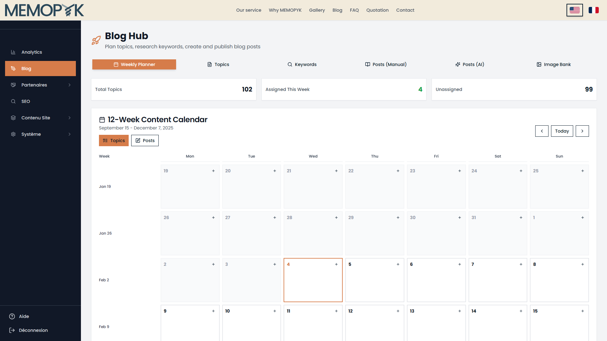
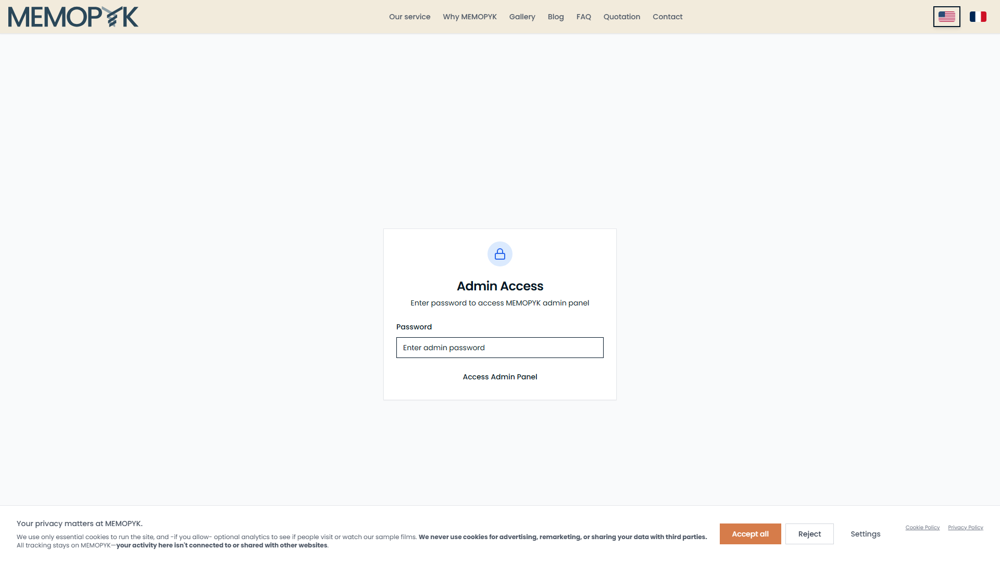
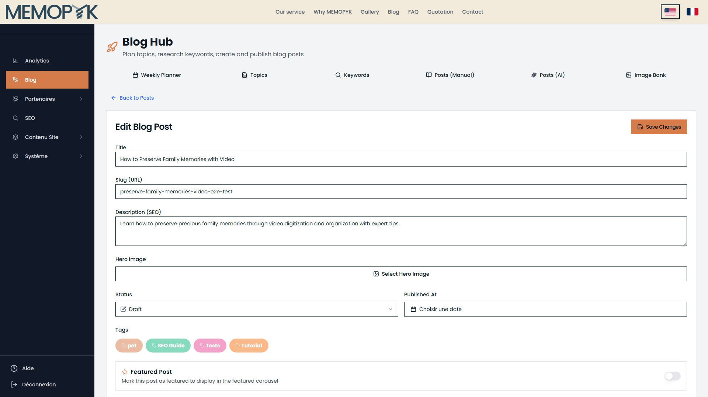
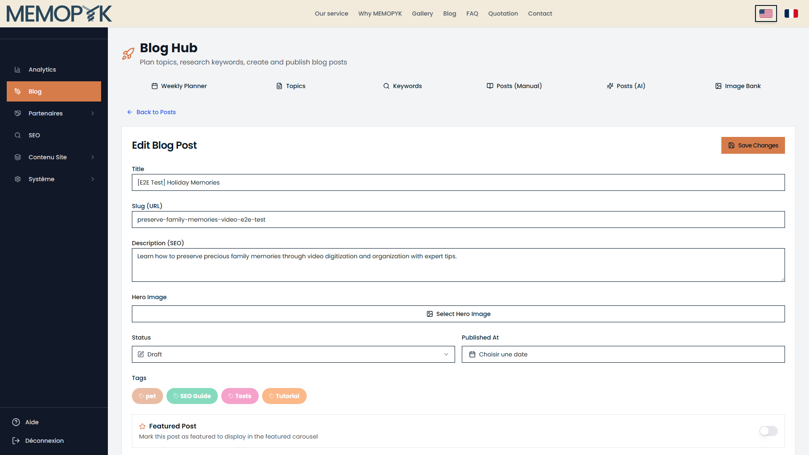
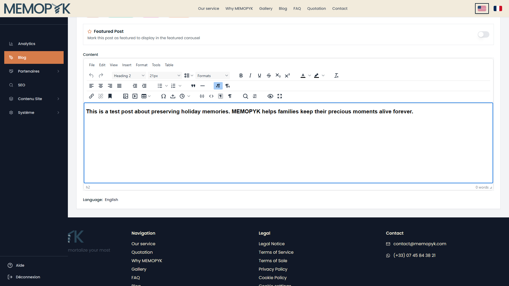
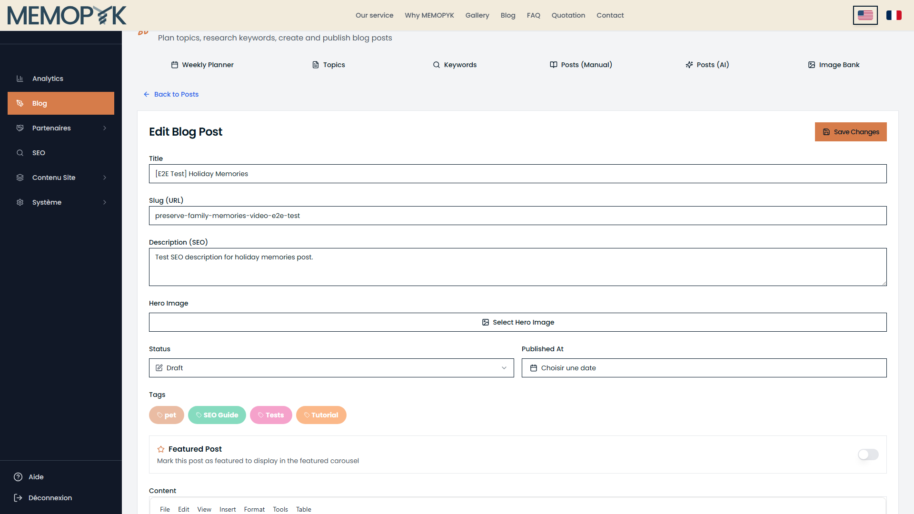

Naive User Help Flow Test Report
Generated: 2026-02-04
Test Environment: https://memopyk.memopyk.com (staging)
Flow Tested: Create a blog post (Manual)
Part A: Verified Tab Labels
The following tab labels were verified from the actual UI screenshot:
| Tab Position | Actual Label |
|---|
| 1 | Weekly Planner |
| 2 | Topics |
| 3 | Keywords |
| 4 | Posts (Manual) |
| 5 | Posts (AI) |
| 6 | Image Bank |

Part B: Login Screen

Login button text: "Access Admin Panel"
Password field placeholder: "Enter admin password"
Authentication fix: Using page.getByRole('button', { name: /access admin/i })
Part C: Flow Test Results
Overall Score
CLEAR: 8/8 (100%)
AMBIGUOUS: 0/8 (0%)
BLOCKED: 0/8 (0%)
Step 1: Open the Posts (Manual) tab
Instruction: Click Blog in the sidebar menu, then click the Posts (Manual) tab. Click New Post at the top right. On the choice screen, select "Write from scratch" to open a blank post in the Blog Editor.
Rating: ✅ CLEAR
Notes: Found Blog in sidebar. Found and clicked "Posts (Manual)" tab. Found "New Post" button. Navigated to choice screen. Found "Write from scratch" option (matches help instruction). Navigating to existing post to test editor UI. Opened existing post in editor.
Step 2: Enter the title
Instruction: Type your post title in the Title field at the top. The slug (URL) is generated automatically - you can edit it if needed.
Rating: ✅ CLEAR
Notes: Found Title input field, entered test title.

Step 3: Write your content
Instruction: Use the rich text editor to write or paste your article. You can format text, add headings, insert images, and create links using the toolbar.
Rating: ✅ CLEAR
Notes: Found TinyMCE editor, entered test content.

Step 4: Add a hero image
Instruction: Click Select Hero Image. Upload a new image or choose from existing ones. This image appears at the top of the published article.
Rating: ✅ CLEAR
Notes: Found hero image button: "Select Hero Image". Not clicking (would open modal).

Step 5: Add tags and description
Instruction: Click on tag badges in the Tags section on the right sidebar to assign tags to your post. Write a short Description (SEO) - this appears in search results and social media previews.
Rating: ✅ CLEAR
Notes: Found Tags section. Found 4 clickable tag badge(s). Found and filled Description (SEO) field.

Step 6: Set status to Published
Instruction: Change the Status dropdown from Draft to Published. Other options are In Review and Archived.
Rating: ✅ CLEAR
Notes: Found Status dropdown. Not changing to Published (keeping as Draft for cleanup).
Step 7: Set the publication date
Instruction: Click Choisir une date to open the date picker. Click Définir maintenant to use the current time, or pick a specific date and time.
Rating: ✅ CLEAR
Notes: Found date picker button: "Choisir une date". Button text matches instruction (French).

Step 8: Save and verify
Instruction: Click Save Changes at the top. Your post is now live. Go back to the Posts (Manual) tab and use the eye icon to preview it on the public blog.
Rating: ✅ CLEAR
Notes: Found "Save Changes" button.

Summary of Issues
No issues found - all steps rated CLEAR.
Report generated by naive-user-manual-flow-test.ts